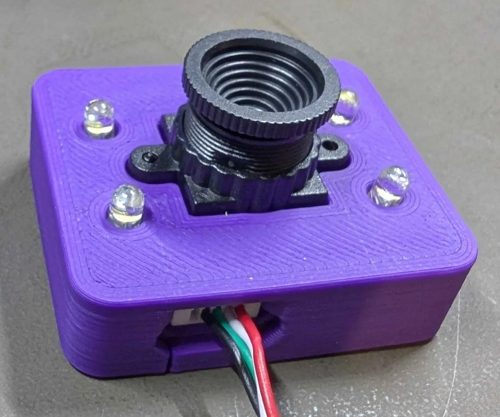
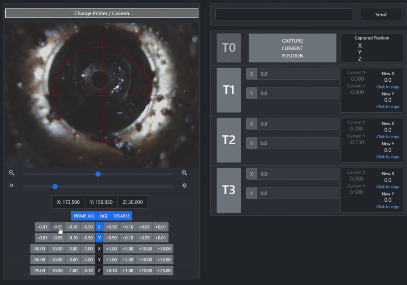
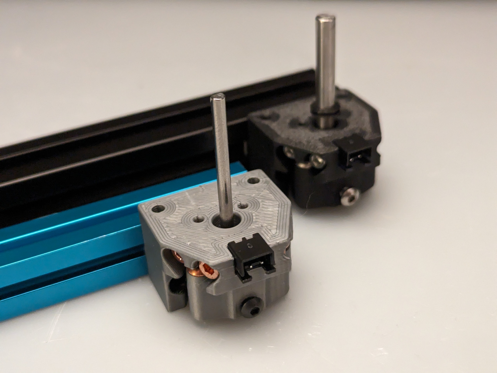
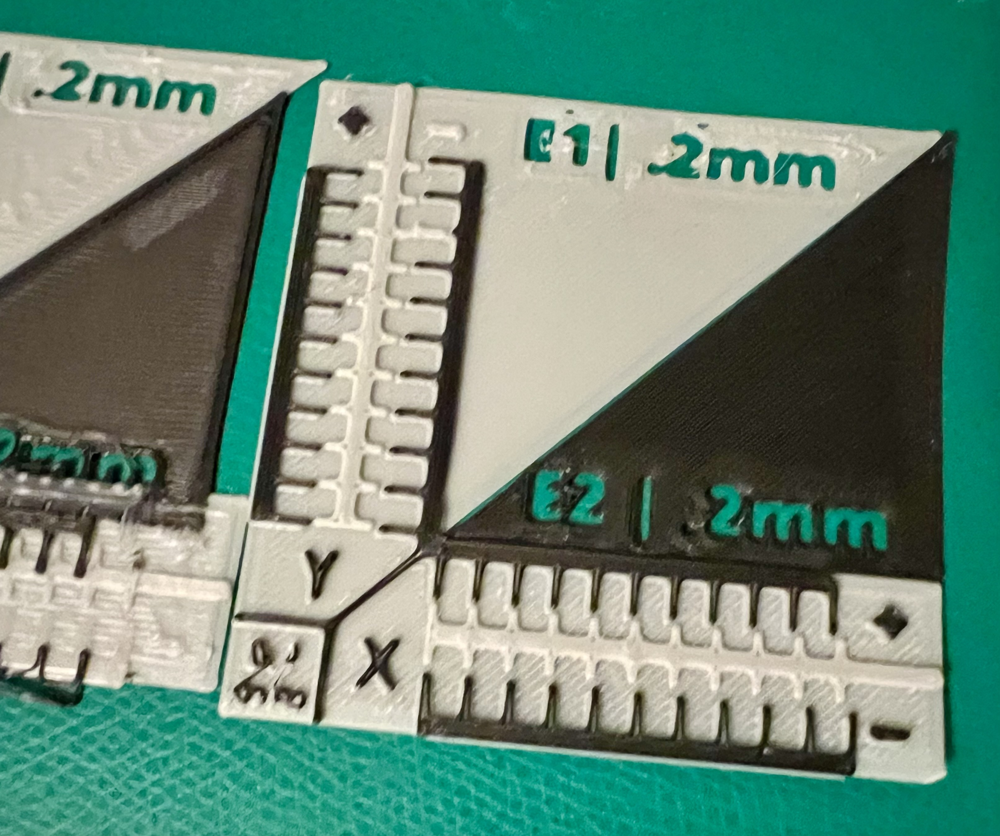

Probes¶
Probe Types
- Z-Probe: Required for every toolhead. Uses OctoTap (TAP) for Z homing and bed leveling.
- Tool Offset Probe: Calibrates nozzle positions so all tools print in the same location. Can use Sexball, Nudge, Axiscope, or printable calibration method.
See the Toolhead Calibration guide for detailed setup procedures.
Z-Probes¶
Z-probes determine the Z=0 position for each toolhead. You need one per toolhead.
TAP (Recommended for most users)¶
Uses the OctoTap PCB (already required for tool detection) for Z homing via nozzle contact.
Setup:
- OctoTap PCB is required per toolhead regardless of Z-probe choice
- Z-offset will be negative (trigger occurs after nozzle contact)
- Install a wiper and use
CLEAN_NOZZLEmacro after homing—filament residue affects accuracy
| Pros | Cons |
|---|---|
| No additional hardware (OctoTap already needed) | Requires tool on shuttle (no toolless homing) |
| Accurate with clean nozzle | Slower for QGL and large bed meshes |
| May dimple PEI plates (especially smooth ones with N52 magnets) |
Beacon/Carto (For toolless homing)¶
Magnetic field sensor that detects the build plate without contact, even while moving.
Setup:
- Requires one per tool or shuttle mount (Klipper doesn't tolerate sensor appearing/disappearing)
- Extra umbilical cable to shuttle
- Some variants may be unstable at elevated temperatures
| Pros | Cons |
|---|---|
| Toolless homing (no tool required) | Additional cost and wiring |
| Much faster than TAP | Requires shuttle-mounted option for toolless operation |
Mounts:
- Carto mounts for CNC shuttles
- Beacon/Carto Mount for Fystec/LDO CNC Shuttle with Top Brace
- Fysect Shuttle Cartograper Mount
Tool Offset Probes¶
Tool offset probes calibrate X, Y, and Z offsets between tools so all nozzles print in the same location. Optional but highly recommended—hardware probes are faster and more accurate than printable calibration methods.
Sexball (Most Popular)¶
A sexbolt mod with a ball top that self-centers by probing each side. Automatically determines X, Y, and Z offsets.

Image by asoli
| Pros | Cons |
|---|---|
| Automated calibration with scripts | Requires 6mm clearance on all four sides (limits mounting locations) |
| Calibrates X, Y, and Z in one process | Needs tight tolerances: no play in sexball, concentric nozzles required |
| Easy setup | Sideways force on sphere can cause issues |
Setup: See Toolhead Calibration for configuration.
BOM¶
Replaces the shaft on a sexbolt:
- Probe
- 12mm Ball with M5 Threads
- M5x30mm External Thread Pin (M5x25mm for Micron)
Only use Hartk-style bodies with sleeves—knockoffs have too much slop.
 Image by BT123
Image by BT123
Parts: - Bushing: AliExpress | US Amazon | UK Amazon | Alternative - Pin: AliExpress | US Amazon | UK Amazon
Also available from official vendors.
Mods¶
- Sexball top mount
- Sexball rest mount
- Alternative with 4mm dowels instead of ball (discord link)
- Dockable bed-top mount
Axiscope (Visual Alignment)¶
Camera-based system with web interface for visual nozzle alignment. Manual but eliminates tolerance issues.
 |
 |
| *Images from [printables](https://www.printables.com/model/1099576-xy-nozzle-alignment-camera)* | |
| Pros | Cons |
|---|---|
| Visual approach eliminates tolerance issues | Manual alignment (~2 minutes per tool) |
| Reveals nozzle problems (stuck filament, etc.) | Z offset requires separate endstop |
BOM: - OV9726 camera module - 5V 3mm round white LEDs (6000-6500k) x 4 - 3D printed camera module holder
Camera USB cable is short—consider a USB keystone insert at the front.
Nudge (DIY Build)¶
3D-printable probe using a vertical pole and spring tension to complete a circuit.

Image from Nudge site| Pros | Cons |
|---|---|
| Mostly 3D printed with common parts | Requires careful tuning to avoid jamming |
| Less horizontal-to-vertical motion translation than Sexball | Must use copper SHCS screws (stainless steel doesn't work reliably) |
Setup: See Toolhead Calibration for usage.
Mods¶
Printable Calibration (No Hardware)¶
Print reference plates and visually measure offsets. Free but time-consuming.

If gcode_z_offsets are unknown, set them high before printing to prevent lower nozzles from digging into the bed.
Method: X, Y and Z calibration tool for IDEX
| Pros | Cons |
|---|---|
| No hardware required | Very time-consuming (especially for 5-6 tools) |
| Visual confirmation | Risk of damaging PEI plate if Z offset is wrong |
FAQ¶
Quick Links:
- My sexball probe doesn't work
- My OctoTAP board doesn't trigger reliably
- Do I need to cut the trace on the OctoTAP board?
- Can I use
SAVE_CONFIGafterPROBE_CALIBRATE? - My Nudge reports "endstop triggered before contact"
- Do I need to calibrate offsets on every print?
- What is toolless homing?
My sexball probe doesn't work, it's always triggered¶
With sensorless homing, ensure endstops/micro switches use ports that don't share pins with motor diag pins (e.g., use Z motor ports). Check your mainboard manual for pin assignments.
My OctoTAP board doesn't trigger reliably¶
See Shuttle FAQ for details. Common fixes:
- Mount PCB as low as possible—push down before tightening screws (screw holes have play)
- Ensure optical sensor is straight and perpendicular to the board
Do I need to cut the trace on the OctoTAP board?¶
Generally no. If supplying 5V from the toolhead board, it works fine. Cutting the trace disables the 24V→5V regulator (makes board 5V-only) and is only needed if the regulator interferes.
Can I use SAVE_CONFIG after PROBE_CALIBRATE?¶
No. SAVE_CONFIG saves z-offset at the bottom of printer.cfg, not in the tool's probe section. Z-offset is fetched from the active tool and applied in homing_override. See calibration configuration for proper setup.
My Nudge reports "endstop triggered before contact"¶
Bad electrical connections. Use copper SHCS screws and check resistance between output pins.
Do I need to calibrate offsets on every print?¶
No. Offsets remain stable unless hardware changes (toolhead disassembly, backplate preload screws, nozzle swap, etc.). Check periodically for drift, especially before long multicolor prints.
What is toolless homing?¶
Homing with just the shuttle (no tool required). Benefits:
- Park last tool in dock (prevents ooze, keeps umbilicals in arc shape)
- Move empty shuttle behind bed (gantry out of the way, ready for next print)